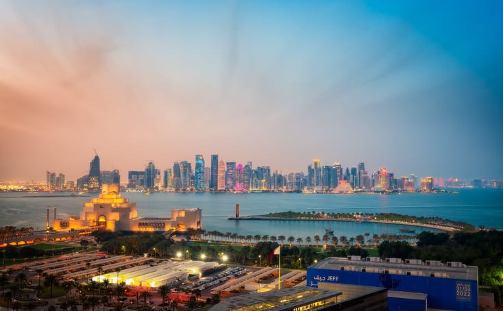

DOHA ? REAL ESTATE ? LIFESTYLE
From luxury waterfront developments to family-friendly communities, Doha offers residential options for every lifestyle and budget.
Doha continues expanding through new developments, modern infrastructure and master-planned communities. Whether you're relocating for work, investing or moving with family, selecting the right neighborhood is one of the most important decisions.
Here are some of Doha's most popular residential areas in 2026.
The Pearl remains one of Doha's most prestigious addresses. The waterfront development offers luxury apartments, marinas, restaurants, retail outlets and a vibrant lifestyle.
It is particularly popular among professionals, executives and international residents seeking premium living.
Lusail is Qatar's flagship smart city development. Modern residential districts, business hubs, entertainment venues and waterfront communities continue attracting residents and investors.
The area represents one of Doha's strongest long-term growth stories.
West Bay is Doha's financial and commercial center. It offers luxury residential towers, business districts, hotels and excellent access to key employment hubs.
Professionals working in finance, consulting and corporate sectors often choose this area.
Al Sadd combines convenience, connectivity and urban living. The neighborhood offers apartments, shopping centers, restaurants and easy access to central Doha.
It remains one of the city's most established and practical residential locations.
Al Waab is a popular choice for families thanks to larger homes, schools, parks and community facilities.
The area provides a quieter lifestyle while remaining connected to major parts of the city.
Msheireb represents one of the most ambitious urban regeneration projects in the region. The district combines sustainability, technology and modern city living.
Residents enjoy walkability, premium amenities and access to cultural attractions.
Doha offers a diverse selection of residential communities suited to professionals, families and investors.
Whether you're seeking luxury waterfront living, a family-friendly environment or proximity to business districts, Qatar's capital provides options for every lifestyle.